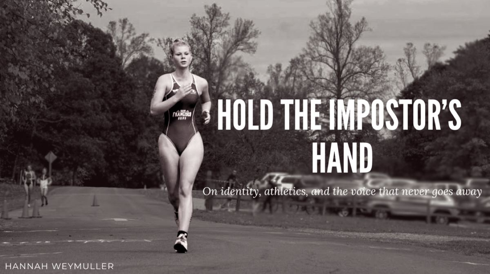
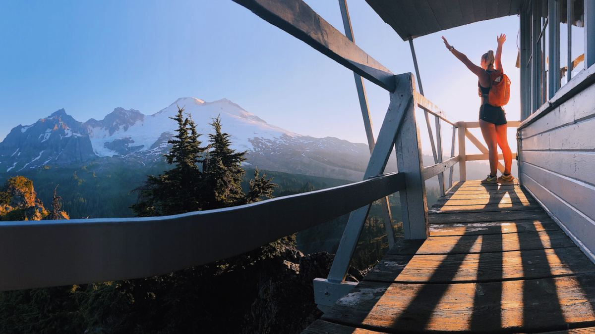
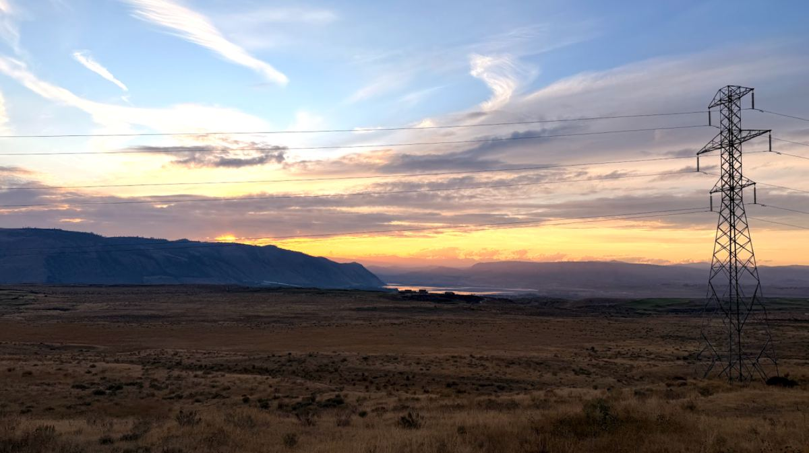
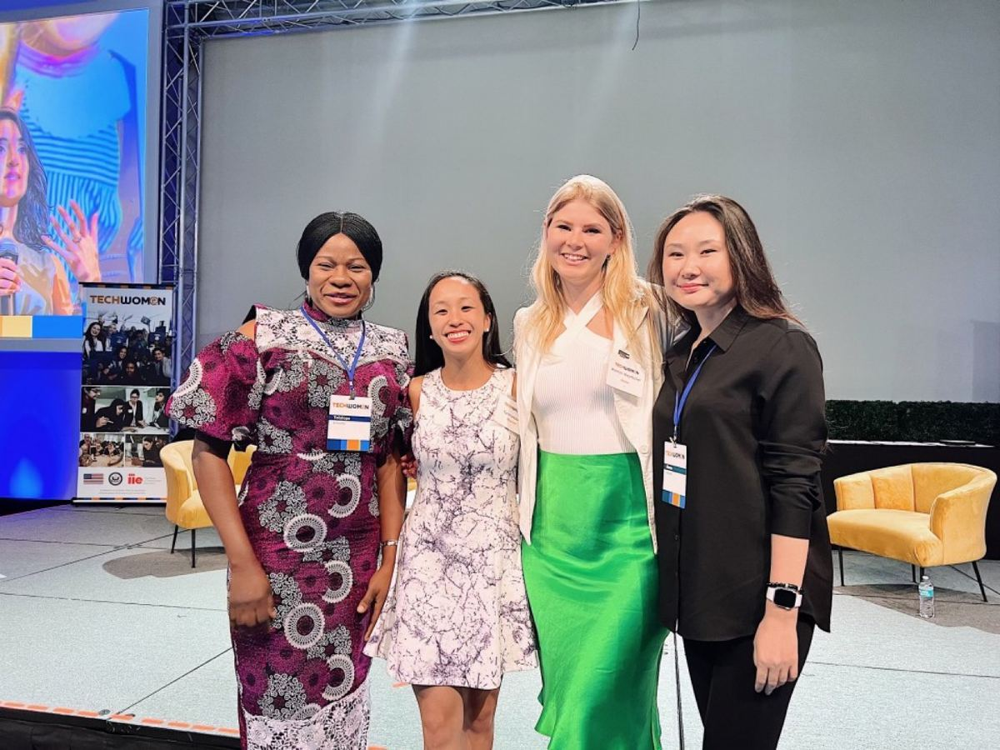
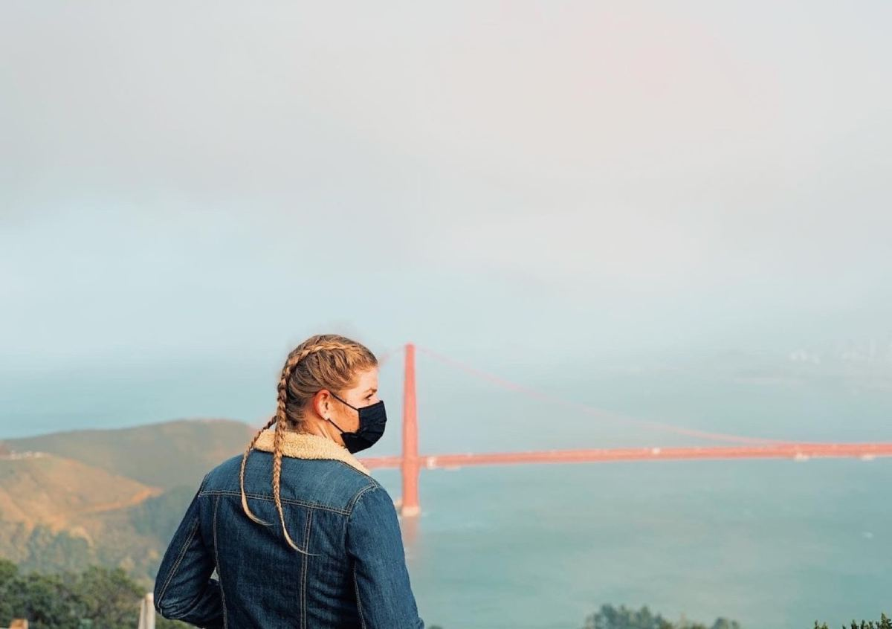

Articles I've written on strategy, BD, marketing, the climbs that taught me something, and the lessons worth sharing. Mostly self-published on LinkedIn, with more in the works.

What if the impostor and the athlete are the same person? A reflection on a NARP turned Division I triathlete turned founder, and the voice that has been asking “who do you think you are” since freshman year. Spoiler: I stopped trying to answer it.
Read on LinkedIn →
I scored a 9% on my first college exam. Not 90. Nine. The story of how dyslexia, a cold LinkedIn message in 2020, and six years of unglamorous follow-through led to a Managing Partner offer at 26. Careers aren’t interstates. They’re deer trails.
Read on LinkedIn →
The clean energy transition has never lacked vision. What it has lacked is speed. A look at where AI is actually making a difference in clean energy deployment right now, from site screening to interconnection queues, and why the unglamorous version of the technology matters more than the hype cycle.
Read on LinkedIn →
Fresh out of university and asked to mentor accomplished engineers from Kazakhstan and Nigeria, my first instinct was to discount myself out of the room. The story of what happened when I flipped the internal dialogue and said “if not now, when?” instead. One of the early moments that taught me the impostor doesn’t get the last word.
Read on LinkedIn →
The original story behind the deer trail. Years before I learned to call it that, I was a college junior tired of scouring LinkedIn and Indeed. So I emailed Callisto a pitch for an internship position that didn’t exist. The phone call I got back in a Minnesota airport security line started a pattern I would keep using for the next eight years.
Read on LinkedIn →Subscribe on LinkedIn to be notified when new pieces go up.
Follow on LinkedIn →